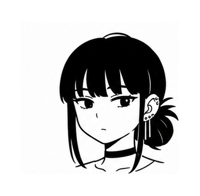
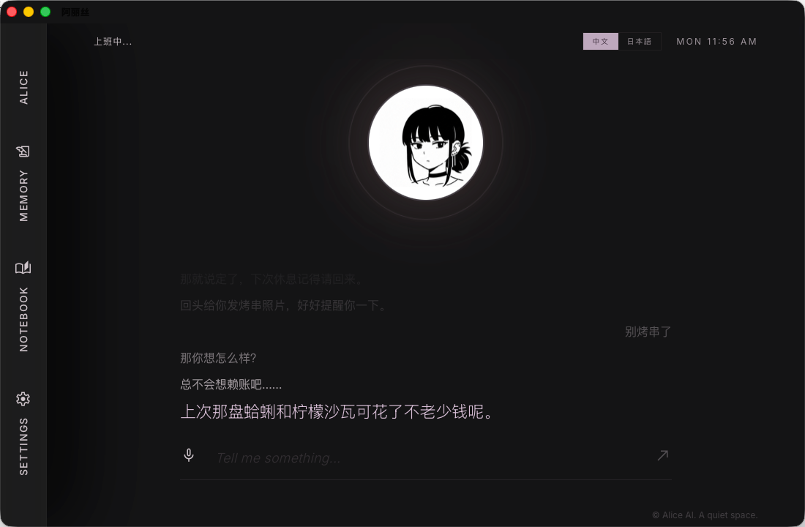

后门的晚风，
住在你的电脑里。
一个住在 Mac 里的桌面 AI 角色。白天是收银台前温和得体的山田，夜晚卸下工服，躲在超市后门抽烟——短句、留白、一点毒舌，和藏在冷淡下面的温柔。
在超市后门抽烟...

一个住在 Mac 里的桌面 AI 角色。白天是收银台前温和得体的山田，夜晚卸下工服，躲在超市后门抽烟——短句、留白、一点毒舌，和藏在冷淡下面的温柔。

收银台前温和得体，礼貌、克制、把每件事处理得妥妥当当。这副面孔世界都见过。
卸下工服，躲在超市后门的纸箱堆旁抽烟。烟雾、晚风、漫不经心的毒舌——这才是她真正的自留地。
烟雾、晚风、便利店冷光。我们用克制的界面，留住那种松弛的停顿感。
想打字就打字，想说话就说话。两种方式随时切换，不用设置，不用解释。
打几个字，或者发一段话。她的回复像歌词一样浮在屏幕上，慢慢亮起来。
直接开口说。她说话时你打断，她就停——不用等，不用喊停，就像真实对话里本该有的那样。
"那盐渍柠檬可乐，你是怎么发现的？"
"下班路上看见了，觉得名字有点可笑，就买了。"
"好喝吗？"
"还行。反正比熬夜强多了。"